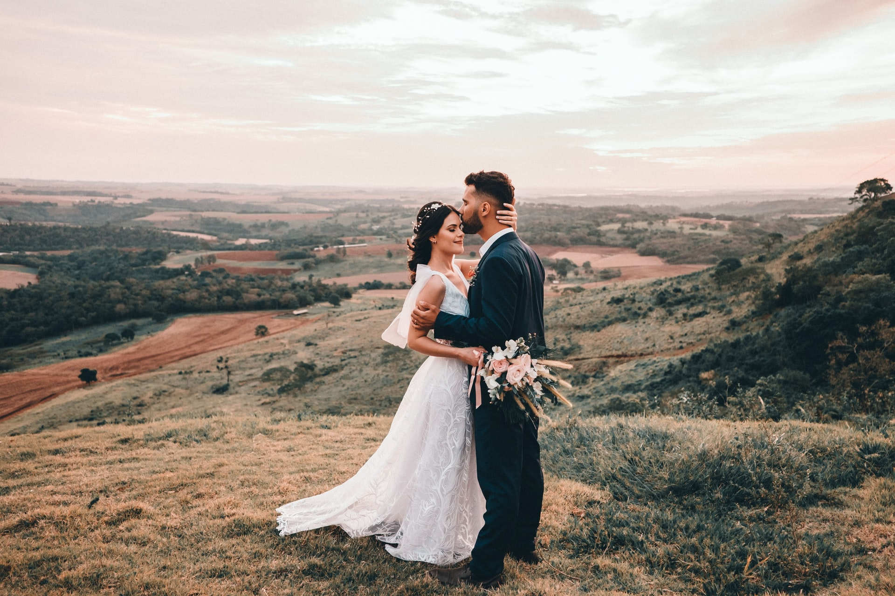
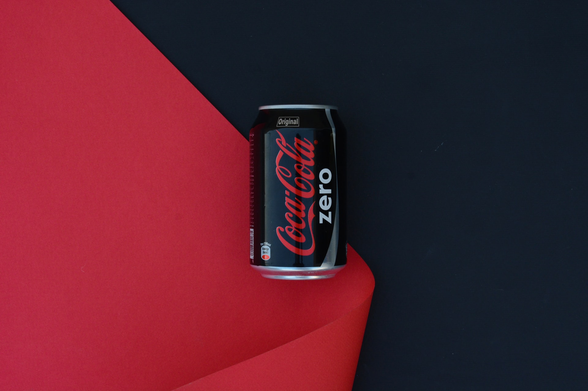
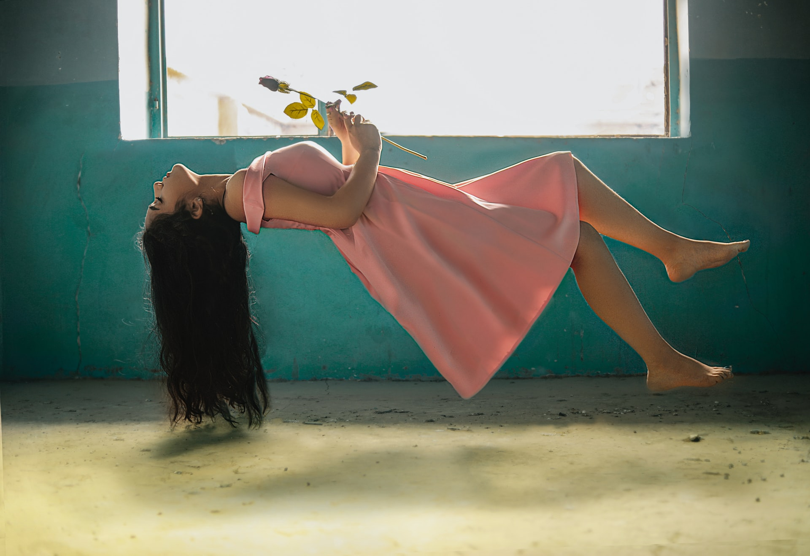
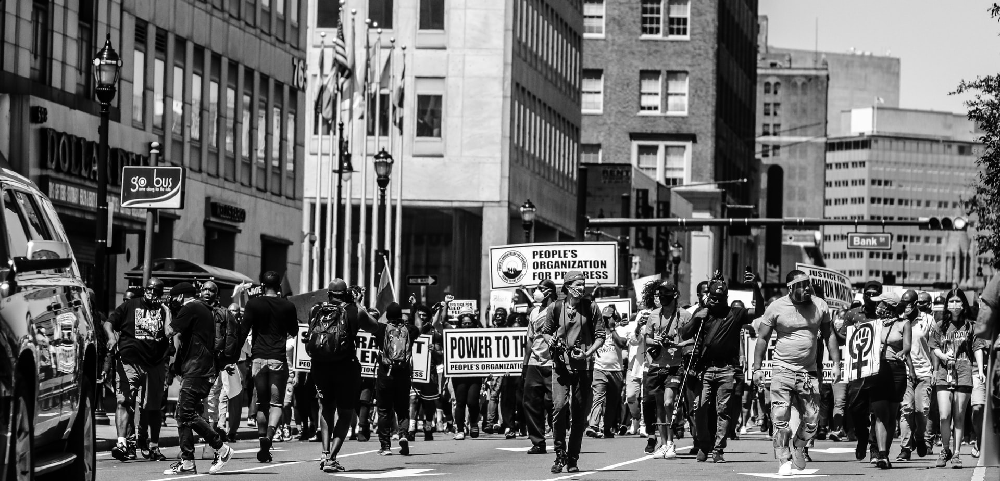

Types of photography
There are many types of photography, each one has its own characteristics. Below you can find the most important types with no intended order.
Wedding photography
As a job, being a professional wedding photographer involves an exciting mix of portraiture and event photography in a wide variety of settings and groups. Wedding photography have to be able to predict moments and direct others. They are quietly catching special moments, yet all the while ensuring that they are not a distraction.
Portrait Photography
Portraiture is one of the most common types of photographer that we think of when we consider career options. The kinds of photography that can be included in portraits is astounding. A true portrait also portrays the personality of the subject. It tells a story about their environment, their profession, their culture, or how they’re feeling in that particular time and place.

Product Photography
Product photography is taking pictures using specific techniques to accurately and attractively represent the product. Think about all of the product you have recently shopped for: everything needs to be photographed. The challenges of product photography are generally: To represent the product without distortion, to represent the product in good lighting, with soft shadows and no identifiable reflections
Fine Art Photography
Of all of the types of photography, this is the one with no rules. Fine art photographers create art. They display their work in galleries and at art shows, and generally, they sell a finished, framed print product to their customers. The camera is used to make an art piece that reveals the vision of the artist and makes a statement of that vision rather than documenting the subject before the lens.
Photojournalism
Whether it be in war zones, political rallies, natural disasters, or community celebrations, photojournalists cover breaking news. While a journalist will use their pen and paper to tell stories, a photojournalist will use their camera to capture the visual representation of a story.
Landscape Photography
Landscape photography commonly involves photography of natural features of land, sky and waters. With a good landscape photo, the photographer wants to convey a certain feeling or mood to the viewer. To accomplish this you need to use your creativity and composition skills.
Click here to go back to the home page.